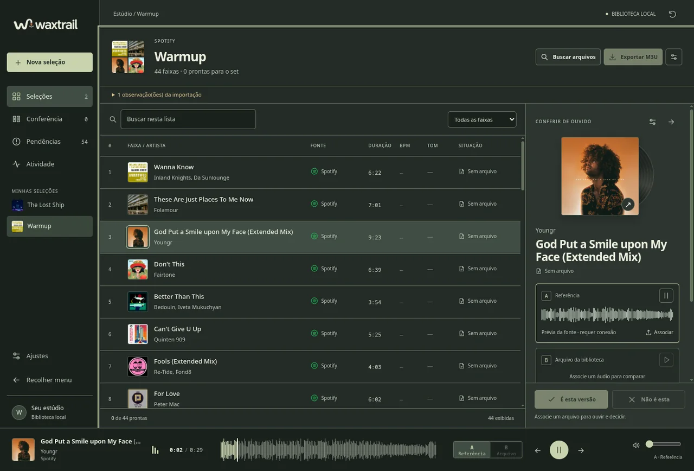
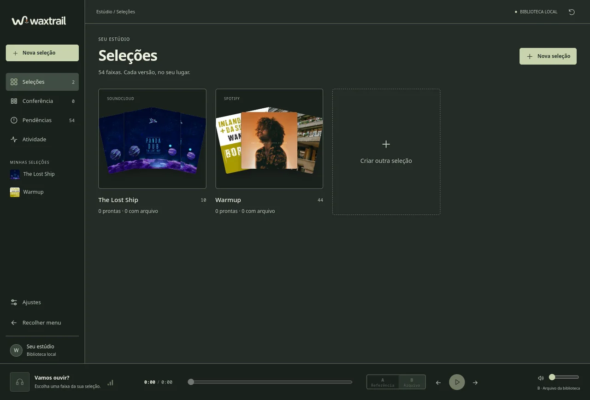
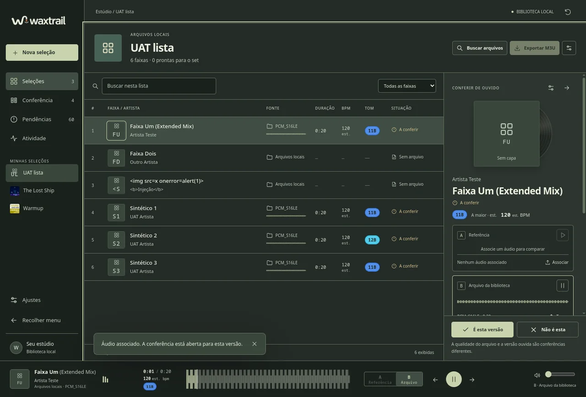
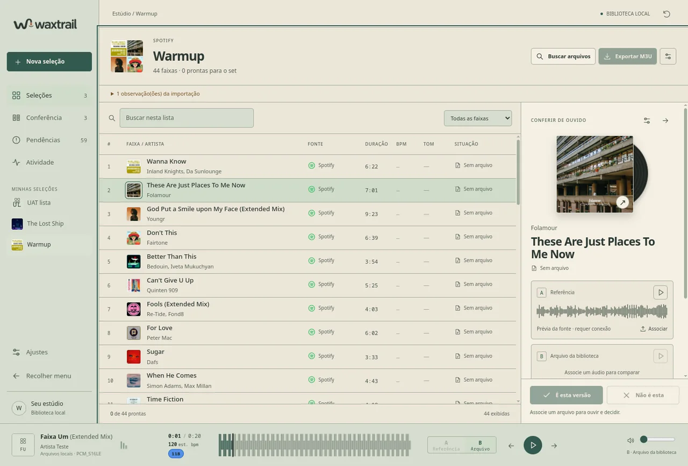
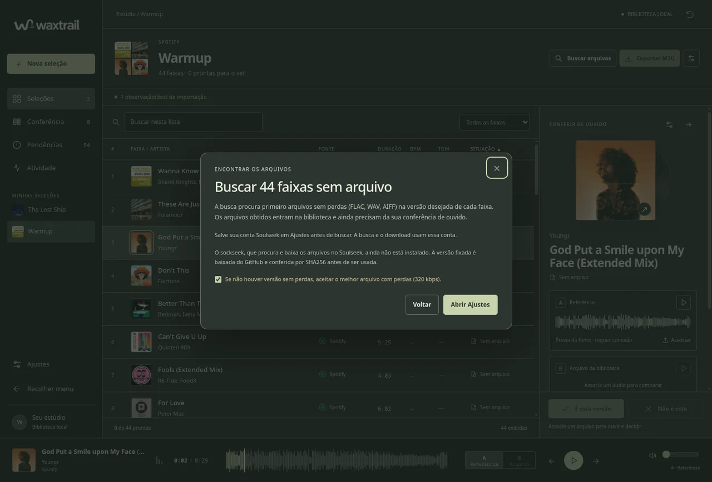

Extended primeiro, sem perdas primeiro
Política de versão por faixa: manter a versão exata ou preferir Extended preservando remixes. A qualidade lossless tem prioridade; o formato com perdas só entra com a sua autorização explícita.
Waxtrail 2.0 · gratuito, para DJs
Cole a playlist do Spotify ou do SoundCloud. O Waxtrail procura cada faixa em Extended Mix, primeiro sem perdas (FLAC, WAV, AIFF), baixa pelo Soulseek, mostra BPM e tom e deixa você conferir de ouvido antes de levar para o set.
Detectando o seu sistema…

Por que existe
Quem toca sabe: Original Mix, Extended Mix e um Edit qualquer não são a mesma música. Um MP3 de 128 kbps não vale um FLAC. E procurar uma a uma no cliente Soulseek, para uma playlist de trinta faixas, come uma tarde inteira. O Waxtrail nasceu para fazer essa ponte: da playlist que você já mantém para os arquivos certos, com a sua conferência no meio.
Como funciona
Cole o link público de uma playlist do Spotify ou de um set do SoundCloud. Também aceita texto, CSV e os áudios que já estão no seu computador. Capas, duração e metadados entram junto.
Para cada faixa, o Waxtrail procura no Soulseek a versão Extended sem perdas; depois com perdas a 320 kbps, se você permitir; e só então a versão disponível pelo título base. Várias faixas ao mesmo tempo, com o progresso de cada uma na lista.
Compare a prévia oficial da fonte (A) com o arquivo obtido (B), veja as formas de onda, BPM e tom com as cores da roda Camelot. Aceite ou rejeite a versão. A decisão é sempre sua.
Gere um M3U só com as faixas aceitas e íntegras, ou um relatório CSV com tudo o que ficou pendente. Os arquivos ficam organizados na biblioteca do Waxtrail.
Recursos
Política de versão por faixa: manter a versão exata ou preferir Extended preservando remixes. A qualidade lossless tem prioridade; o formato com perdas só entra com a sua autorização explícita.
Uma sessão Soulseek por camada com todas as faixas pendentes e seis trabalhos simultâneos. Cada linha mostra em tempo real: procurando, baixando «arquivo», verificando, obtido.
Lidos das tags do arquivo ou estimados localmente (marcados como «est.»). O tom aparece como selo colorido: 8A rosa, 8B mais forte, e assim por diante, para montar transições harmônicas.
Capa, título com a versão em destaque, tempo, BPM e tom, forma de onda espelhada em altura cheia com o trecho tocado e o cursor em barra vertical. A/B entre referência e arquivo com um clique.
Ao selecionar uma faixa do Spotify ou do SoundCloud, a prévia oficial vai para o cache local: toca sem streaming, mostra a forma de onda e continua disponível durante a busca.
Ordene por faixa, fonte, duração, BPM, tom ou situação. Ícones de Spotify, SoundCloud e pasta local; mini-waveform por linha; capas embutidas ou vindas da fonte.
Cópias gerenciadas com SHA256 na pasta de downloads que você escolher, uma subpasta por seleção; exportação que revalida a integridade; remoção com desfazer. Nada sai do seu computador além das buscas que você pede.
FFmpeg, yt-dlp e sockseek são detectados no sistema ou instalados em versões fixadas, conferidas por SHA256 antes de rodar. Sem instaladores escondidos.
Telas




Download
Escolha o pacote do seu sistema. Os arquivos são publicados nas releases do GitHub com as somas SHA256 para conferência.
Os pacotes não têm assinatura comercial nem notarização: o Windows e o macOS podem pedir confirmação na primeira abertura. Veja Instalação. As somas de verificação estão no arquivo SHA256SUMS.txt de cada release.
A primeira geração do Waxtrail era um aplicativo com interface web embutida e outra organização de biblioteca. Ela permanece publicada para quem já a usa. O Waxtrail 2 não migra automaticamente a biblioteca da 1.
Instalação
Arch Linux e derivados (CachyOS, EndeavourOS, Manjaro): baixe o pacote e instale com o pacman. Se o Waxtrail 1.x estiver instalado, ele é substituído.
sudo pacman -U ./waxtrail-2.1.0-1-x86_64.pkg.tar.zstDebian 12, Ubuntu 22.04 ou mais novos e derivados: o apt instala o pacote e as dependências.
sudo apt install ./Waxtrail-2.1.0-linux-amd64.debOutras distribuições: extraia o .tar.gz em uma pasta sua e execute Waxtrail/Waxtrail; a pasta _internal precisa continuar ao lado do executável. Precisa de x86_64 com glibc 2.35 ou mais recente e sessão Wayland ou X11.
tar -xzf Waxtrail-2.1.0-linux-x86_64.tar.gz
./Waxtrail/WaxtrailDepois de instalar, o Waxtrail aparece no menu de aplicativos com o ícone novo. FFmpeg/FFprobe do sistema são usados quando existem; caso contrário, Ajustes oferece uma versão fixada.
Waxtrail-2.1.0-windows-x64-setup.exe: ele instala na sua conta de usuário, cria o atalho no menu Iniciar e o desinstalador. Windows 10 ou 11, 64 bits. Quem preferir sem instalar pode extrair o .zip e abrir Waxtrail\Waxtrail.exe..dmg e arraste o Waxtrail para Aplicativos. Há um pacote para Apple Silicon (M1 ou mais novo) e outro para Intel.xattr -dr com.apple.quarantine /Applications/Waxtrail.appPerguntas frequentes
Não. Do Spotify e do SoundCloud ele lê apenas os metadados públicos da playlist (títulos, artistas, duração, capas) e a prévia oficial de trinta segundos, usada como referência para comparar. Os arquivos vêm do Soulseek, dos seus próprios áudios ou, por escolha explícita, de um link do YouTube.
Para quem toca, a versão é parte da identidade da faixa: uma Extended Mix tem intro e outro longos para mixar; um Radio Edit não. Se a Extended não existe na rede, o Waxtrail avisa e obtém a versão disponível pelo título base, deixando a decisão registrada na conferência.
Que o valor foi estimado localmente a partir do trecho central do áudio, porque o arquivo não trazia essa informação nas tags. É um indício para montar o set, não uma medição certificada.
Em uma pasta local (~/.local/share/waxtrail-v4 no Linux, %LOCALAPPDATA%\waxtrail-v4 no Windows, ~/Library/Application Support/waxtrail-v4 no macOS) com o banco SQLite, capas, prévias e exportações. Os arquivos de áudio vão para a pasta de downloads, que você escolhe em Ajustes (por padrão dentro da biblioteca), com uma subpasta por seleção. Não existe conta, servidor nem telemetria. A senha Soulseek fica em um arquivo com permissão restrita ao seu usuário.
O Waxtrail é uma ferramenta de organização e busca; a responsabilidade pelo uso é sua, conforme as leis do seu país. Cada faixa traz atalhos para comprar em Bandcamp e Beatport. Apoie os artistas que você toca.
Sim. Os instaladores da 1.0.1 continuam publicados e a biblioteca antiga não é alterada pelo Waxtrail 2, que usa uma pasta própria.
Referências